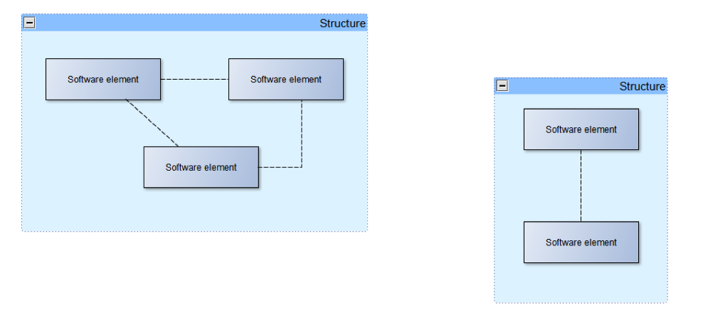

Blogg
Här finns tekniska artiklar, presentationer och nyheter om arkitektur och systemutveckling. Håll dig uppdaterad, följ oss på Twitter
Här finns tekniska artiklar, presentationer och nyheter om arkitektur och systemutveckling. Håll dig uppdaterad, följ oss på Twitter

Det finns flera sorters arkitektur och det finns således även flera arkitektroller inom IT. Om jag med bloggen enbart hade haft syftet att sprida kunskap men inte förståelse hade jag här och nu börjat lista olika sorters arkitektur och olika arkitektroller. Men istället vill jag steg för steg beskriva och motivera varför de som används också är de som behövs. Vid sidan av det jag skriver själv kommer jag kontinuerligt under hela bloggserien även att tipsa om några favoriter på nätet där det går att ta reda på mer information. Kanske kan du som redan arbetar som arkitekt ha nytta av dessa för att introducera dina kollegor i ditt arbete.
Det finns en logisk behovskedja som leder fram till de olika typer av arkitekturer som behövs inom en verksamhet. Det är inga krångliga saker och det mesta inom arkitektur är ofta enklare och mer logiskt än vad många kanske föreställer sig. Så här ser behovskedjan ut:
I den Svenska IASA boken nämns dessa fyra lager beskrivna och ytterst kommer detta från arkitekturramverket TOGAF
Att se dem som lager är en bra jämförelse för det betyder att om du tar bort ett lager så faller ovanliggande lager samt att varje enskilt lager motiveras av lagret ovanför. Det är lagret ovanför som alltså är orsaken till att lagret alldeles under det behövs.
Det finns olika sätt att sammanfatta arkitekturerna som olika lager och en del ritar in säkerhet parallellt med alla fyra lagren (säkerhet behövs som bekant på alla nivåer) och en del ritar även ut information på ett annat sätt för det behövs också i mer än ett lager. Men utan att teorisera för mycket så kan man konstatera att det inte finns något facit för hur man beskriver detta men att om man vill fördjupa sig så är arkitekturramverket TOGAF den plats man bör gå till. Mer om TOGAF kommer senare i bloggserien.
De olika sorters arkitektur man kan dra slutsatser om från det här resonemanget är alltså verksamhetsarkitektur, informationsarkitektur, applikationsarkitektur, teknologiarkitektur och säkerhetsarkitektur. Men det finns fler arkitekturer än dessa. Först och främst så finns det många specialiseringar inom respektive typ av arkitektur. Ett exempel är ”Nätverksarkitektur” som egentligen är en delmängd inom teknologi. På samma sätt är många andra arkitekturer som används i dagligt tal egentligen specialiseringar som ryms inom något av de fyra lagren.
Man kan även tala om olika typer av arkitektur som kombinationer av de fyra lagren. Mjukvaruarkitektur är till exempel en arkitektur som har huvudfokus på de tre nedersta lagren (information, applikation och teknologi) och Enterprise arkitektur handlar om alla fyra lagren.
Vilka typer av huvudarkitekturer som finns framgår redan av innehållsförteckningen i ”Boken om IT-arkitektur” som ges ut av den Svenska delen av IASA där Kap 2, 3, 4 och 5 utgör nästan hela boken.
Enterprisearkitektur handlar egentligen om alla arkitekturer som finns inom ett företag, hur de påverkar varandra, hur man arbetar med dem osv. Mer om Enterprisearkitektur tas upp under en kommande blogg som handlar om arkitekturramverk. En definition av Enterprisearkitektur är:
Enterprise architecture (EA) is “a well-defined practice for conducting enterprise analysis, design, planning, and implementation, using a holistic approach at all times, for the successful development and execution of strategy. Enterprise architecture applies architecture principles and practices to guide organizations through the business, information, process, and technology changes necessary to execute their strategies. These practices utilize the various aspects of an enterprise to identify, motivate, and achieve these changes.”
Den här videon (framtagen av Gerben Wierda) beskriver en del av bakgrunden till varför Enterprisearkitektur är viktigt. https://www.youtube.com/watch?v=qDI2oF1bASk
Verksamhetsarkitektur handlar mycket om de processer som behövs för att verksamheten ska kunna bedrivas. Det handlar även om hur själva verksamheten ser ut, vad man producerar, hur den egna organisationen ser ut osv.
Lösningsarkitektur spänner över flera arkitekturer och har som syfte att en hel lösning ska hänga ihop och fungera. Ta en transportfirma som exempel och tänk på allt som händer vid frakt av ett paket som du har beställt från Amazon.
Det är enkelt att inse att i det här scenariot är det inte ett enda system inblandat utan ganska många system och att användarna av de olika systemen befinner sig på många olika platser. Flygplatser, utlämningsställen, bilar som kör ut paketen, godsmottagningar osv.
En förändring i en verksamhetsprocess sätter därför lätt sina spår i ett tiotal system och arbetet med lösningsarkitektur går ut på att ta fram lösningsförslag för hela lösningen. I det här exemplet är alltså lösningsarkitektens fokus inte inriktad enbart på ett enskilt system där avier skrivs ut eller enbart på ett system som används vid utlämningsställen. Fokus är snarare på helheten. En lösningsarkitekt brukar ofta gå upp till ett arkitekturråd (Enterprise Architecture Board) för prövning av föreslagen lösning. När en lösning är godkänd och beslutad så är lösningsarkitektens uppgift att se till att lösningen implementeras och har då ofta regelbunden kommunikation med bland annat ett antal systemarkitekter för de olika system som ingår i lösningen.
Eftersom huvudfokus för den här bloggserien är mjukvaruarkitektur ska vi här titta på definitionen av mjukvaruarkitektur som finns i boken Software Architecture in Practice 3rd ed.
”The software architecture of a system is the set of structures needed to reason about the system, which comprise software elements, relations among them, and properties of both”
För att enklare kunna ta till sig definitionen har jag även ritat en enkel bild. Bilden illustrerar bara det som definitionen säger genom att rita in några ”software elements” inuti ett par ”structures”. De streckade pilarna illustrerar relationer mellan elementen. 
Jag gillar verkligen den här definitionen! Inte minst för att uttrycket ”needed to reason about” ger en vägledning om när arkitekturen har blivit för generell eller om den har blivit för detaljerad. Om man lägger ned lite tid på att fundera över vilka ord som verkligen behövs för att resonera med någon om arkitekturen så är det mycket lättare att få den att hamna på rätt nivå av detaljeringsgrad.
Längre fram i bloggserien när arkitekturmönster, mekanismer, taktiker och annat beskrivs så kommer det att framgå att det nästan alltid handlar om olika ”software elements” som har relationer till varandra och att både elementen och relationerna har egenskaper (properties).
Tidigare när jag höll utbildningar om arkitektur så innehöll varje presentation av ett ämne åtminstone en övning. I en bloggserie finns inte samma möjlighet men här kommer ändå ett förslag på en tankeövning som du som läsare gärna får ägna dig åt innan nästa blogg i serien. Så här ser tankeövningen ut.
Utgå från en resebyrå som verksamhet och skriv ned så många frågeställningar du kan komma på för varje lager (verksamhet, information, applikation, teknologi) med början i verksamhet och sedan steg för steg ned genom lagren. Det är fritt att tänka på vad som helst i varje lager så länge det är relaterat till det lagret. Håll gärna tankarna på den detaljeringsnivån som är lagom för att kunna resonera med någon om vad du tänkt på. Vilken information behöver hanteras? Var kommer den ifrån? Behöver den skyddas och hanteras säkert? Vilket stöd behövs från applikationer? Var befinner de sig som använder applikationerna? Vilka behöver tillgång till applikationerna?
Det finns massor av frågeställningar att tänka för varje enskilt lager. Försök även att besvara frågeställningarna så får du se hur mycket av arkitekturerna som faller på plats i din tankeövning.
Övningen är nyttig för att inte enbart ha läst det som står i det här blogginlägget utan även för att ”ta till sig” det som står här. Det är dessutom en bra förberedelse inför nästa inlägg i bloggserien som kommer att handla om vilka faktorer som påverkar en arkitektur.
Tills sist vill jag nämna att en blogg inte behöver vara en envägskommunikation. Det är bara roligt om du som läser den även skriver kommentarer. Kom gärna med både egna tankar, funderingar och frågor.